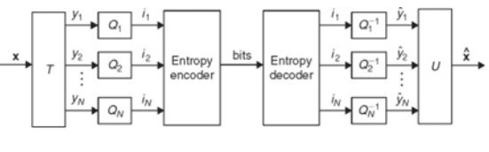
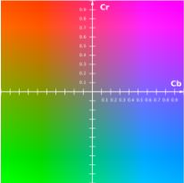
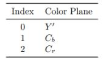
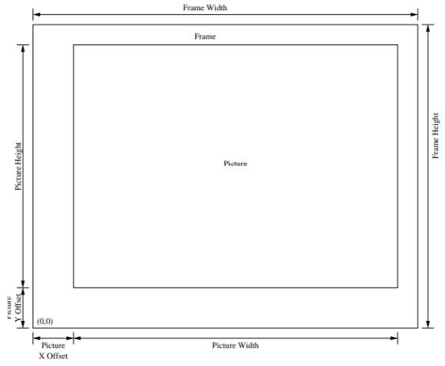
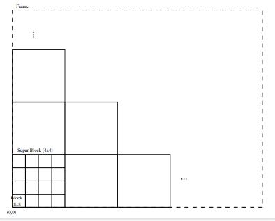
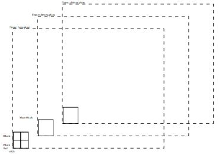
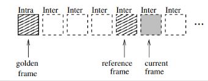
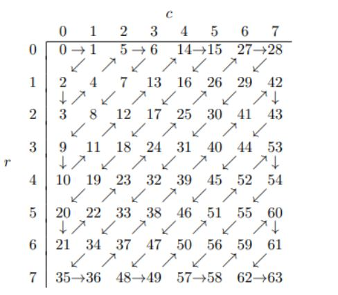

Theora es un códec de video con pérdidas de propósito general desarrollado por la fundacion Xiph.Org.
Theora es llamado así por el personaje Theora Jones, un personaje del programa de televisión Max Headroom.
El predecesor de Theora, On2 TrueMotion VP3, era originalmente un códec de video patentado y patentado
desarrollado por On2 Technologies el cual fue lanzado en mayo del año 2000 con la versión VP3.1. Tres meses
después, la versión VP3.2 fue lanzada.
En septiembre de 2001, On2 Technologies publicó el código fuente del códec VP3.2 bajo la Licencia pública
VP3.2 0.1, una licencia personalizada de código abierto. En marzo de 2002, On2 otorgó la licencia del códec
VP3 bajo la Licencia Pública General Menor de GNU.
En junio de 2002, On2 donó VP3 a la Fundación Xiph.Org y lo ofreció bajo la licencia estilo Ogg Vorbis BSD.
En agosto de 2002, On2 firmó un acuerdo con la Fundación Xiph.Org para hacer de VP3 la base de un nuevo
códec de vídeo gratuito, llamado Theora. On2 declaró a Theora como sucesora de VP3.
El objetivo de Theora era realizar la integración del codec de la integración de VP3 con el proyecto Ogg y
Vorbis. Con esto existiría la posibilidad de tener ficheros Ogg, donde Theora actúa como la capa de vídeo,
mientras que Vorbis actúa generalmente como la capa de audio Esto permitiría trabajar con audio y vídeo sin
tener que maniobrar con formatos cerrados y/o de pago.
El 3 de octubre de 2002, On2 y Xiph anunciaron la finalización y disponibilidad del lanzamiento del código
alfa inicial de libtheora, la implementación de referencia de Theora.
La codificación de entropía es un esquema de compresión de datos sin pérdidas independiente de las
características específicas del medio. La codificación de entropía crea y asigna un código de prefijo único
a cada símbolo único en la entrada.

El proceso de codificación y decodificación de Theora se basa en bloques de píxeles de 8 × 8.
Un cuadro de video en Theora es una matriz bidimensional de píxeles. Theora utiliza un sistema de
coordenadas diestro, con el origen en la esquina inferior izquierda del marco.
Esto es contrario a muchos formatos de video que usan un sistema de coordenadas zurdo, con el origen en la
esquina superior izquierda del marco.
YCbCr es una familia de espacios de color utilizados como parte de la canalización de imágenes en color en
sistemas de video y fotografía digital.
Y′ es el componente de luminancia y Cb y Ct son los componentes de crominancia de diferencia de azul y de
diferencia de rojo.
Los espacios de color Y′CbCr se definen mediante una transformación matemática de coordenadas a partir de un
punto blanco y primarios RGB asociados.

Theora divide la matriz de píxeles en tres planos de color separados, uno para cada uno de los componentes
Y0 , Cb y Cr de un píxel.
El plano Y0 también se denomina como el plano luma, y los planos Cb y Cr también se denominan planos
croma.
A cada plano se le asigna un valor numérico.

Se requiere que un cuadro de video codificado en Theora tenga un ancho y una altura que sean múltiplos de
dieciséis, haciendo un número entero de bloques incluso cuando el croma los planos son sub muestreados.
Sin embargo, dentro de un marco, una región de imagen más pequeña puede definirse para presentar material
cuyas dimensiones no sean un múltiplo de dieciséis píxeles.
Es esta región de la imagen la que contiene los datos de vídeo reales. Las partes del cuadro que se
encuentran fuera de la región de la imagen pueden contener datos de la imagen, por lo que el cuadro debe
recortarse a la región de la imagen antes de la visualización.

Cada plano de color se subdivide en bloques de 8 × 8 píxeles. Los bloques se agrupan en arreglos de 4×4
llamados superbloques.
Cada plano de color tiene su propio conjunto de bloques y superbloques.

Un bloque macro contiene una matriz de bloques de 2 × 2 en el plano luma y los bloques colocados en los
planos croma.
Por lo tanto macro bloques puede representar entre seis y doce bloques, dependiendo de cómo el croma los
planos son submuestreados. Esto contrasta con los superbloques, que solo contienen bloques de un solo plano
de color.

Cada bloque se codifica utilizando uno de un pequeño conjunto fijo de modos de codificación que definen cómo
se predice el bloque a partir de fotogramas anteriores.
Un bloque se predice usando uno de los dos marcos de referencia, seleccionados según el modo de
codificación.
Un cuadro de referencia es la versión completamente decodificada de un cuadro anterior en la secuencia.
El primer marco de referencia disponible es el marco intra anterior, llamado marco dorado.
El segundo marco de referencia disponible es el marco anterior, ya sea un intra-frame o un inter-frame.

Se agrega un residuo al contenido predicho de un bloque para formar la reconstrucción final. El residual se
almacena como un conjunto de coeficientes cuantificados de un aproximación entera de una transformada de
coseno discreta tipo II bidimensional.
El DCT toma una matriz de valores de píxeles de 8 × 8 como entrada y devuelve una matriz de 8 × 8 de los
valores de los coeficientes.
El orden natural de estos coeficientes se define como orden de fila principal, de menor a mayor frecuencia.
También se indexan a menudo en orden de zig-zag.
